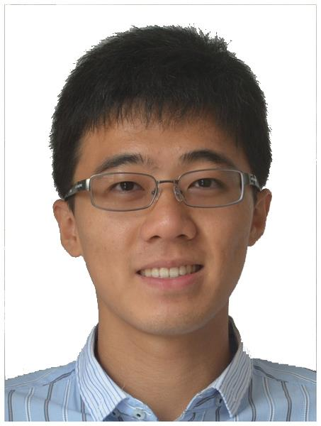

Bo-Yuan Huang

PhD student (since Sep. 2015)
Department of Electrical Engineering
Princeton University
Research Interests:
Formal methods and design automation, HW/SW/FW verification and synthesis.
Email: byhuang AT princeton DOT edu
Mailing Address:
Dept. of Electrical Engineering
Engineering Quad, Room B224
Princeton University
Princeton, NJ 08544-5263
I am now a PhD student in the department of Electrical Engineering at Princeton University,
where I am advised by Professor Sharad Malik.
My research interest is applying formal methods in enhancing design automation problems.
You can find more about me from my
CV
(including publications).
The best way to contact me is through email.
Research Topics:
- Firmware verification in accelerator-rich SoC
- Template-based instruction-level-abstraction synthesis
- Asynchronous QDI circuit synthesis
- Resource allocation in wireless device-to-device communication